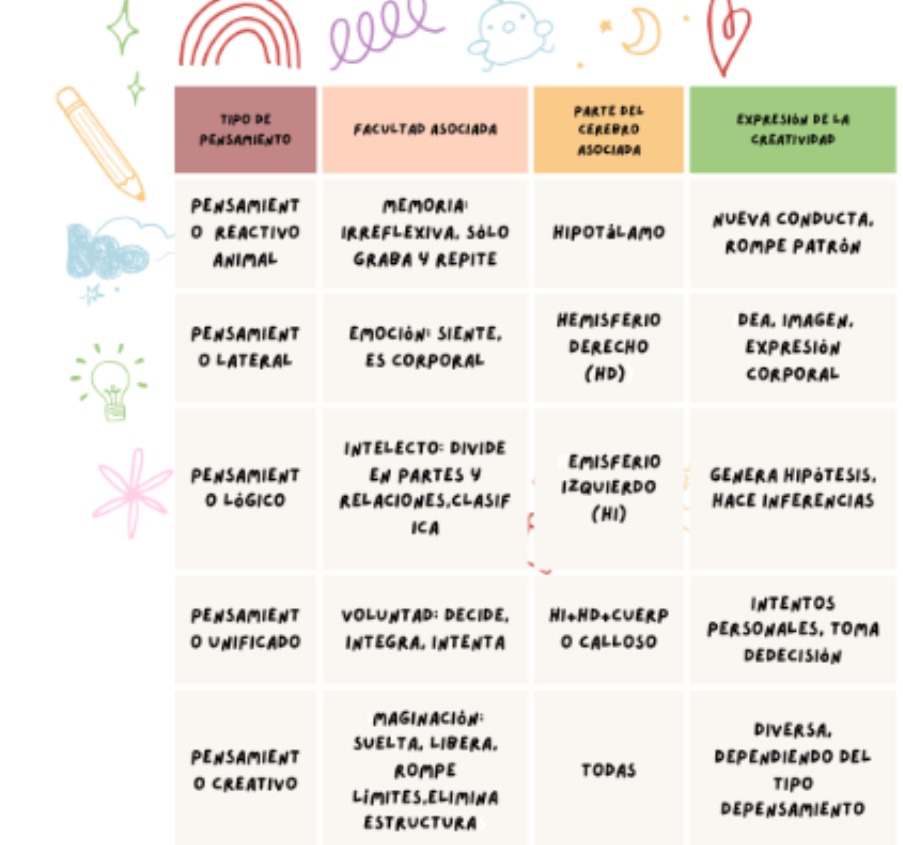

Objetivos
Este portafolio es el reflejo de mi transformación durante la clase de Salud MentalI. No solo he aprendido teorías, sino que he descubierto cómo estos conocimientos cambian radicalmente mi manera de entender la medicina. Cada concepto, cada caso analizado, me ha hecho crecer tanto profesional como personalmente.
Cuando comencé este curso, no imaginaba cómo la salud mental estaría tan presente en cada aspecto de la práctica médica. Ahora lo veo claro: en cómo escucho a mis pacientes, en cómo interpreto sus síntomas, incluso en cómo manejo mis propias emociones durante la atención. He aprendido que detrás de cada dolencia física hay una historia personal que merece ser escuchada.
Lo que más me impactó fue entender que ser médico no se trata solo de recetar medicamentos, sino de acompañar procesos humanos complejos. Ahora, cuando miro a un paciente, no solo veo un caso clínico: veo sus miedos, sus recursos emocionales, su contexto familiar, y todo esto forma parte esencial del tratamiento.
Este portafolio no es solo un compendio de información; es un viaje personal. Cada sección refleja mis aprendizajes, mis dudas y mis reflexiones. He aprendido a observar, a escuchar y a sentir. He aprendido que la salud mental es una una parte importante de la carrera de medicina.
Introducción
la clase de Salud MentalI, un espacio que nos ha ayudado a entender mejor cómo funciona la mente humana y cómo se relaciona con el cuerpo. El curso empezó con una introducción general a lo que es la salud mental, y poco a poco fuimos viendo temas más específicos como el funcionamiento del cerebro, las neuronas, el sistema nervioso, la percepción, la sensación y cómo todo esto se relaciona con el dolor. También aprendimos sobre los estados de conciencia, los trastornos del sueño y otros procesos importantes como la memoria, el pensamiento, la inteligencia, la motivación y la personalidad. Además, vimos cómo factores externos como el estrés o las actitudes pueden afectar nuestro comportamiento. Las clases fueron una mezcla de actividades sincrónicas (en vivo) y asincrónicas (para hacer en nuestro tiempo), lo cual nos permitió organizar mejor el estudio y aprender a nuestro ritmo. Con este portafolio quiero reflejar no solo los temas que vimos, sino también el esfuerzo por aprender a estudiar por mi cuenta y seguir construyendo conocimientos que me van a servir en mi formación como futuro médico.
Reflexión sobre la psicología y la medicina
La psicología clínica colabora estrechamente con la medicina, especialmente en el diagnóstico y tratamiento de trastornos mentales como la depresión, ansiedad, esquizofrenia o trastornos de la personalidad. Además, se involucra en procesos de intervención, rehabilitación y prevención de enfermedades mentales.
Medicina y salud mental La medicina no solo trata enfermedades físicas, sino que también considera el impacto psicológico de estas condiciones en la vida del paciente. El enfoque biopsicosocial propuesto por George Engel integra los factores biológicos, psicológicos y sociales en el tratamiento del paciente.
Importancia de la interdisciplinariedad Una atención integral al paciente exige la colaboración entre médicos, psicólogos, trabajadores sociales y otros profesionales. Esta colaboración permite entender al ser humano más allá de los síntomas físicos, reconociendo sus emociones, pensamientos, entorno social y espiritualidad
Estigma y salud mental A pesar de los avances, muchas personas siguen sintiendo vergüenza o miedo de buscar ayuda psicológica. Es necesario promover la sensibilización, educación y eliminación del estigma para lograr una sociedad más empática e inclusiva. Éxitos en este contenido el éxito fue que comprendí mejor qué es la psicología y por qué es tan importante en la medicina. Aprendí que la psicología estudia la conducta humana y los procesos mentales que influyen en cómo actuamos, sentimos y pensamos. También conocí las primeras perspectivas psicológicas, como la conductual, cognitiva, psicodinámica, humanista y biológica, y eso me ayudó a entender que no hay una sola manera de ver al ser humano, sino varias formas de analizar su comportamiento.
Organizador Gráfico
Desafíos Uno de los principales desafíos que tuve al desarrollar esta práctica fue comprender bien cómo se relacionan todos los factores que influyen en la salud mental y física. Al principio me costó identificar ejemplos concretos que reflejaran esa conexión de manera clara y lógica. También fue un reto resumir la información de forma organizada en cada columna del cuadro, especialmente cuando había que explicar actividades de promoción y prevención que tuvieran sentido tanto para la salud física como mental. Otro desafío fue tener que expresarlo con mis propias palabras sin dejar de lado la profundidad del tema.
Reflexión personal Esta práctica me hizo reflexionar sobre lo esencial que es ver al paciente de forma integral. No podemos separar la mente del cuerpo, y como estudiante de medicina, tengo la responsabilidad de entender cómo los factores emocionales, sociales y físicos se relacionan entre sí. Aprendí que prevenir enfermedades no solo es cuestión de medicamentos, sino también de fomentar hábitos saludables que incluyan el descanso, la alimentación equilibrada y el apoyo emocional.
Éxitos Un éxito importante de esta práctica fue que logré identificar factores clave que afectan la salud mental como el estrés, la mala alimentación y el entorno. También aprendí a proponer actividades creativas y físicas que promueven el bienestar emocional y físico al mismo tiempo. Por ejemplo, me di cuenta de lo importante que es socializar, hacer ejercicio y tener buenos hábitos de sueño para sentirse bien en general. Además, esta actividad me ayudó a conectar lo aprendido en clase con situaciones reales que viven muchas personas, lo cual me hizo sentir más preparada como futura profesional de la salud.
| ¿Cúal es la relación entre la salud mental y la salud física? | Factores que influyen en la salud mental. Identifique y describa un mínimo de 3 elementos | Describa tres actividades de promoción y prevención para la salud mental y argumente los beneficios de cada actividad seleccionada | Describa tres actividades de prevención para la salud mental y argumente los beneficios de cada actividad seleccionada | ¿Por qué es importante establecer metas alcanzables en el camino cada un estilo de vida saludable en nuestros pacientes? |
|---|---|---|---|---|
| El ser humano puede ser integrado en lo físico y mental ya que, por lo tanto están relacionados. Que son más propensas a sufrir daños |
El estrés: Puede provenir de la falta de vitaminas y el entorno. Alimentación: Alteración de alimentación que desorden alimenticio ya que una persona que solo come pizza sufre de sobrepeso y ocurre trastornos alimenticios Desorden del sueño: No dormir las horas como son puede afectar muchos factores |
Áreas creativas: Sirve para socializar también lo usan cada persona o más bien de tercera edad para descansar o hacer sus cosas y para estar tranquilos. Talleres de recreación: Ayuda a la persona para poder socializar con los demás Cursos gratuitos de la municipalidad |
Ambientes saludables: Buen horario de sueño ya que a las personas les ayudan mucho para hacer su rutina diaria. Actividad Física: Lo usamos para sacar el estrés además lo utilizamos para mantenernos activos y también para ser sociables con las personas Metas y prioridades: Decisiones que ayudan a la persona a concentrarse en sí mismo y en el bienestar de la persona |
|
Resolución del caso
Heidi es una arquitecta de 45 años, consulta a su médico debido a que ha tenido mucho trabajo lo que le ha afectado en su estado de ánimo debido a que a
veces llora sin saber por qué o se enoja con mucha facilidad. Se siente la mayor parte del tiempo cansada, le cuesta terminar las actividades en su trabajo,
casi no come y cuando lo hace come lo que tenga a la mano lo que muchas veces es comida chatarra, por la noche se despierta asustada a cada rato. fatigada,
tiene dificultades para concentrarse y a menudo se siente abrumada. Heidi está preocupada porque una amiga fue referida por el IGSS a psiquiatría por lo
que considera que es necesario mejorar su salud mental y física a través de un estilo de vida más saludable.
Caminar para que se pueda despejar cuando ella tenga tiempo libre.
Guía aprendizaje: Neurona
Desafíos Durante el desarrollo de esta guía, uno de los desafíos más grandes fue entender con claridad conceptos nuevos como el potencial de acción, la sinapsis y la recaptación de neurotransmisores. Aunque ya había escuchado algunos términos, explicarlos con mis propias palabras me hizo darme cuenta de que necesitaba profundizar más. También fue complicado distinguir entre las funciones de ciertos neurotransmisores que tienen efectos parecidos, como la serotonina y la dopamina. Otro reto fue organizar bien las ideas en los cuadros de análisis, evitando repetir lo mismo en la parte literal y la interpretación.
Éxitos Un gran éxito fue que logré comprender mejor cómo funcionan las neuronas y por qué son tan importantes para el sistema nervioso. Me gustó poder identificar partes como las dendritas, el axón y la mielina, así como saber qué hace cada neurotransmisor. Ahora entiendo mejor cómo se comunican las neuronas entre sí y cómo eso influye directamente en la salud mental.
Reflexión personal Me ayudó a darme cuenta de lo compleja pero también fascinante que es la forma en que se comunica nuestro sistema nervioso. Me sorprendió pensar que algo tan pequeño como una neurona puede influir tanto en cómo nos sentimos, cómo reaccionamos o incluso en cómo nos movemos. Aprender sobre los neurotransmisores me hizo ver lo importante que es mantener un equilibrio en nuestro cuerpo, porque cuando ese equilibrio se rompe, también puede afectarse nuestro ánimo, la memoria, el sueño y muchas otras cosas que damos por sentado. Después de hacer esta actividad, entendí mejor por qué a veces nos sentimos mal sin saber exactamente por qué, y cuánto tiene que ver el cerebro con eso.

Sistema Endocrino y Cerebro: Estructura y Funciones
Introducción Al abordar el tema del Sistema Nervioso Central, Endocrino y Cerebro, me sumergí en un mundo fascinante donde cada estructura y función desempeña un papel crucial en nuestra vida diaria. Comprender cómo interactúan estas partes para regular desde movimientos hasta emociones fue un desafío intelectual, pero también una oportunidad para apreciar la complejidad del cuerpo humano. Este trabajo colaborativo no solo fortaleció mis conocimientos.
Desafíos Uno de los mayores retos era la información de los módulos 8 y 9 en un mapa conceptual y un cuestionario de 25 preguntas. Decidir qué conceptos eran esenciales y cómo organizarlos de manera coherente requirió tiempo y reflexión. Además, el caso de estudio de Beto me obligó a aplicar lo aprendido a una situación real, lo cual fue desafiante pero enriquecedor. Identificar los hemisferios y lóbulos afectados, así como proponer intervenciones cognitivas, me hizo consciente de la importancia de un enfoque integral en la salud mental.
Éxitos Logré crear un mapa conceptual claro y un cuestionario completo que facilitó la comprensión de los temas. También me sentí satisfecho al describir las funciones de las partes del encéfalo y las glándulas endocrinas en mis propias palabras, lo que demostró mi dominio del contenido. En el caso de Beto, pude justificar mis respuestas con base en lo estudiado y ofrecer recomendaciones prácticas para su recuperación, lo que reforzó mi capacidad de análisis y empatía.
Reflexión personal Esta experiencia me enseñó que el aprendizaje colaborativo no solo enriquece el conocimiento, sino que también desarrolla habilidades como la comunicación y el trabajo en equipo. Aprendí que la neuro plasticidad, aunque más limitada en adultos, puede potenciarse con estimulación adecuada y apoyo emocional. Personalmente, valoro más el papel del sistema nervioso y endocrino en nuestra salud y comprendo la importancia de abordar casos como el de Beto con paciencia y ciencia. Este proyecto no solo cumplió con los objetivos académicos, sino que también dejó una huella en mi perspectiva sobre la salud mental y la resiliencia humana.
Sensasion
Introducción Al abordar el tema del Sistema Nervioso Central, Endocrino y Cerebro, La función desempeña un papel crucial en nuestra vida diaria. Comprender cómo interactúan estas partes para regular desde movimientos hasta emociones fue un desafío intelectual, pero también una oportunidad para apreciar la complejidad del cuerpo humano.
Desafíos Considero que este fue identificar las diferencias entre las distintas teorías de la personalidad, especialmente cuando algunas se contradicen o se basan en ideas abstractas. Me costó especialmente recordar los nombres y conceptos del enfoque psicodinámico y diferenciarlos del enfoque de los rasgos o del humanista. Además, al analizar los casos clínicos, tuve que hacer un esfuerzo extra para aplicar estos conceptos teóricos a personas reales.
Éxitos Un logro importante fue que logré relacionar lo aprendido con situaciones reales que he visto en familia, amigos e incluso en pacientes durante prácticas. Comprendí que muchos comportamientos tienen raíces en la estructura de la personalidad, y que al reconocer rasgos como la ansiedad, la introversión o la impulsividad, puedo tener más empatía. También me sentí satisfecha porque aprendí a identificar los cinco grandes rasgos de la personalidad y cómo estos influyen en el comportamiento de una persona.
Reflexión personal Me hizo pensar que no se puede juzgar a una persona por su forma de actuar sin antes entender su historia, su contexto y su personalidad.
Percepción
Introducción Esta hoja de trabajo me ayudó a entender conceptos claves como sensación, esenciales en la clase de salud mental. Aunque fue un gran reto para mi, logré y aplicar lo aprendido con varios ejemplos y reflexiones
Desafíos Algunos términos fueron difíciles de entender, como los umbrales sensoriales.
Éxitos Un logro importante fue que logré relacionar lo aprendido con situaciones reales que he visto en familia, amigos e incluso en pacientes durante prácticas. Comprendí que muchos comportamientos tienen raíces en la estructura de la personalidad, y que al reconocer rasgos como la ansiedad, la introversión o la impulsividad, puedo tener más empatía. También me sentí satisfecha porque aprendí a identificar los cinco grandes rasgos de la personalidad y cómo estos influyen en el comportamiento de una persona.
Reflexión personal Me hizo pensar que no se puede juzgar a una persona por su forma de actuar sin antes entender su historia, su contexto y su personalidad.
Recreación de la tabla
Cuadro de Análisis No. 1
| Pregunta | Interpretación en sus propias palabras | 2 ejemplos descritos sustancialmente |
|---|---|---|
| ¿Qué son las sensaciones y para qué nos sirve estudiar estas en medicina? | Es una capacidad para que pueda detectar los sentidos como el tacto, el dolor, la visión o el movimiento y posicionamiento de nuestro cuerpo | Podemos sentir frío, mareo, asco, náuseas, vértigo, dolor, temor, alegría |
| Fases de la sensación | Fase física del estímulo y luego activa el órgano sensorial y luego fase fisiológica encargada por el sistema nervioso quien traslada la información vía neuronal al cerebro, y luego la fase de expresión de lo que se ha sentido o sensación. |
1. Tocar una plancha caliente: sensación de calor → dolor y temor
2. Comer un postre: estimula el gusto → sensación de placer
|
| ¿Qué es un estímulo? | Es una señal externa o interna que el cuerpo recibe a través de los sentidos (sistema nervioso) y que puede desencadenar una reacción sensitiva agradable o desagradable. |
Estímulo externo: explosión (ruido → miedo)
Estímulo interno: fiebre (calor → malestar)
|
| ¿A qué hace referencia el proceso de adaptación? | Son los cambios que se producen en distintos órganos y sistemas del cuerpo humano para mantener buena salud. |
1. Ejercicio físico para evitar sobrepeso
2. Sudar para enfriar el cuerpo
|
| Tipos de umbrales sensoriales | Son los límites de las capacidades sensoriales. Es conveniente distinguir entre el umbral absoluto, el umbral de reconocimiento, el umbral de diferencia, y el umbral terminal. |
1. Umbral absoluto: mínima cantidad de estímulo perceptible
2. Umbral diferencial: diferencia mínima detectable entre dos estímulos
|
Cuadro de Análisis No. 2: Tipos de alucinaciones
| Criterio | Descripción en sus propias palabras | 2 ejemplos descritos de cada alucinación |
|---|---|---|
| Acústicas | Son percepciones auditivas sin que exista un sonido real. La persona cree escuchar voces, ruidos o música que no están presentes. |
1. Paciente con esquizofrenia escucha voces agresivas
2. Persona en duelo oye voz de ser querido fallecido
|
| Gustativas | Percepción falsa de sabores. El individuo cree sentir un sabor extraño sin haber ingerido nada. |
1. Sabor a metal constante en la saliva
2. Sabor amargo sin causa en epilepsia temporal
|
| Olfativas | Percepción de olores que no existen. Se cree oler sustancias agradables o desagradables sin fuente real. |
1. Olor a gas inexistente que provoca ansiedad
2. Olor a carne podrida sin fuente real
|
| Táctiles | Sensación de contacto o movimiento en la piel sin estímulo físico real. |
1. Insectos caminando sobre la piel (inexistentes)
2. Ser tocado por alguien cuando se está solo
|
| Visuales | Se ven objetos, personas o luces que no existen en el entorno real. |
1. Sombras o figuras en habitación vacía
2. Animales arrastrándose en suelo (hospital)
|
Dormir y Soñar
Introducción los estados de conciencia, el sueño y su importancia en la salud mental. Aprendí sobre las etapas del sueño, trastornos comunes y cómo los ritmos circadianos afectan nuestro bienestar. Aunque fue un tema complejo, me ayudó a entender mejor.
Desafíos
Éxitos
Reflexión personal Este tema me hizo valorar cómo el sueño afecta la salud física y mental. Me di cuenta de que, aunque me cuesta retener información, dormir bien podría ser clave para mejorar mi rendimiento. Los trastornos del sueño (como la apnea) ahora los veo no solo como teoría, sino como problemas reales que enfrentaré con pacientes
Aprendizaje y Condicionamiento clásico
Introducción Esta presentación me introdujo al condicionamiento clásico y su impacto en la conducta humana, desde los experimentos de Pavlov hasta aplicaciones en medicina. Como estudiante de medicina con dificultades académicas, entender estos conceptos me ayudó a ver cómo el aprendizaje influye tanto en pacientes como en mi propio rendimiento.
Desafíos Terminología compleja: Distinguir entre estímulos neutros, incondicionados y condicionados me confundió al principio. Tuve que repasar varias veces los ejemplos de Pavlov para internalizarlo
Aplicación práctica: Relacionar teorías abstractas (como la extinción o generalización) con casos clínicos reales (ej. fobias) requirió esfuerzo adicional.
Éxitos Ahora entiendo cómo un estímulo neutro (como un sonido) puede volverse condicionado (ej. campana = salivación). Además que ahora identifiqué cómo mis propios hábitos (ej. estudiar con música) son formas de condicionamiento que puedo optimizar.
Reflexión personal me hizo reflexionar sobre cómo mis respuestas automáticas (ej. ansiedad ante exámenes) pueden ser "reprogramadas" mediante técnicas conductuales, asociar el estudio con recompensas pequeñas (como un descanso) podría mejorar mi motivación.
Pavlov: Condicionamiento clásico
Introducción Ofrece una visión profunda sobre los desafíos y logros en el campo de la medicina, resaltando la importancia de la perseverancia, la empatía y el compromiso con el bienestar del paciente. Como estudiante de medicina, estos temas resonaron particularmente en mí, ya que estoy en la etapa inicial de mi formación y consciente de los obstáculos que debo superar para convertirme en una profesional competente y compasiva.
Desafíos Uno de los principales desafíos que se mencionan en el video es la alta carga de responsabilidad que enfrenta un médico, tanto en aspectos técnicos como en el trato humano. La necesidad de mantenerse actualizado en conocimientos científicos, Gestionar situaciones de alta presión y mantener la empatía con los pacientes Son obstáculos constantes. Además, el documento destaca las dificultades emocnacionales y éticas que surgeneración en la práctica clínica, como lidiar con pacientes en condiciones críticas o tomar decisiones difíciles en momentos de incertidumbre.
Éxitos El vídeo resalta los logros y satisfacciones que la medicina puede lograr.
Reflexión Personal Desde mi perspectiva como estudiante de medicina, el video me motiva a seguir adelante pese a las dificultades que pueda encontrar en mi camino. Reconozco que la carrera requiere esfuerzo constante y una gran pasión por aprender y servir, pero también sé que los logros y la satisfacción de ayudar a otros hacen que valga la pena. Este contenido me inspira a mantener una actitud comprometida, a prepararme para los desafíos y a recordar siempre la importancia de la empatía y la ética en mi futura práctica clínica.
Condicionamiento operante
Introducción Los procesos cognitivos son funciones mentales que nos permiten aprender, recordar, razonar y comprender el mundo. Según Howard Feldman, las aproximaciones cognitivas del aprendizaje explican cómo adquirimos, procesamos y usamos la información. Este enfoque se centra en cómo las personas piensan, perciben, recuerdan y resuelven problemas, siendo clave para mejorar la educación y el desarrollo personal.
Desafíos
Éxitos
- Explica cómo las personas piensan y aprenden.
- Mejora métodos educativos.
- Integra memoria, percepción, lenguaje y pensamiento
- Fomenta el pensamiento crítico.
- Apoya terapias para dificultades cognitivas.
- Impulsa tecnologías educativas.
- Se adapta a muchos contextos.
Reflexión Adquieren, procesan, almacenan y usan información. Se centran en procesos mentales como la percepción, la atención, la memoria, el pensamiento y la resolución de problemas.
Fundamentos de la Memoria Pt1
Introducción La memoria es la capacidad que tiene la mente de guardar, mantener y recuperar información. Es clave para aprender y funcionar en la vida diaria. Se divide en tres sistemas: memoria sensorial, memoria a corto plazo y memoria a largo plazo.
Desafíos
Éxitos
- Ayuda a entender cómo recordamos información importante, como nombres, datos médicos o pasos clínicos.
- Explica cómo funciona el cerebro al estudiar o hacer exámenes.
- Permite aplicar técnicas de estudio efectivas, como la repetición o el repaso.
- Relaciona la memoria con las emociones y el aprendizaje, muy útil para el trato con pacientes.
- Muestra qué partes del cerebro están involucradas, como el hipocampo y la amígdala.
Reflexión Aprender sobre la memoria me ayudó a entender por qué a veces olvido cosas o por qué ciertos recuerdos son tan fuertes.
Fundamentos de la Memoria Pt2
Introducción me ayudó a comprender no solo procesos cognitivos básicos, sino también estrategias para mejorar mi propio aprendizaje y retención de información.
Desafíos
Éxitos Aprendí técnicas para mejorar mi memoria, como la *organización (agrupar información) y la asociación (relacionar datos nuevos con conocimientos previos).
Reflexión Al tener bajas calificaciones, este tema me hizo reflexionar sobre cómo mis fallas de memoria (ej. olvidar contenido de exámenes) podrían deberse a falta de procesamiento profundo o interferencias. Por ejemplo, ahora sé que estudiar en diferentes ambientes (biblioteca, casa) puede fortalecer la retención.
Estructuras cerebrales que participan en el proceso de la memoria
Introducción El condicionamiento clásico, propuesto por Iván Pávlov, es un tipo de aprendizaje en el que un estímulo inicialmente neutro, al ser asociado repetidamente con un estímulo incondicionado que provoca una respuesta natural, llega a provocar por sí mismo esa respuesta...
Desafíos
Éxitos Permite entender cómo un estímulo neutro puede provocar una respuesta tras ser asociado repetidamente con otro estímulo significativo
Reflexión Comprender el condicionamiento clásico me ha permitido apreciar cómo ciertas experiencias pueden influir en las respuestas de los pacientes. Reconocer que una simple asociación puede desencadenar reacciones emocionales o fisiológicas resalta la importancia de crear entornos clínicos positivos.
Pensamiento, Creatividad y Razonamiento
Tipos de pensamiento y partes asociadas al cerebro
Información
En este portafolio digital, he recopilado una serie de trabajos y reflexiones que abarcan los temas tratados en la clase de Salud MentalI. Cada sección está diseñada para ofrecer una visión clara y concisa de los conceptos aprendidos, así como de su aplicación práctica en la vida cotidiana y en el ámbito médico.
A lo largo de este portafolio, he incluido gráficos, imágenes y ejemplos que ilustran la importancia de la salud mental en nuestra vida diaria. Además, he reflexionado sobre los desafíos y éxitos que he experimentado durante el proceso de aprendizaje, así como sobre la relevancia de la psicología en el campo de la medicina.